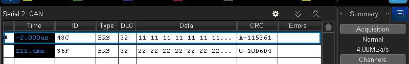
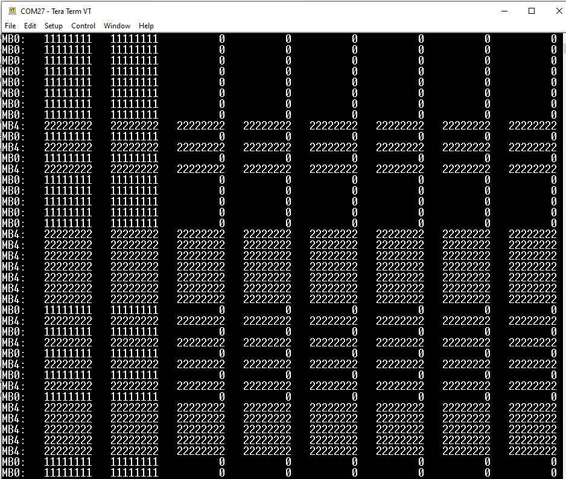

Description
CAN-FD protocol allows frames with more than 8 data bytes. Received data bytes that exceed the
CAN FD's data handling capacity shall be discarded. A such implementation that is requested to
transmit a longer frame shall padding up the rest of the DATA-FIELD with a constant byte pattern (e.g $CC).
For S32K: "When the DLC value stored in the MB selected for transmission is larger than the respective MB
pay-load size, FlexCAN adds the necessary number of bytes with constant 0xCC pattern to complete
the expected DLC".
Above statement applies when the pre-configured MBDSR0 is lower than the actual transmitted DLC.
When the pre-configured MBDSR0 is higher than the actual transmitted DLC. Tx data must be padded
manually by software
The intention of this project is to show how this manual passing is done, taking the CAN-FD cookbook
example as starting point, this code will do the following tasks
NODE A (Tx)
- Transmits 8-bytes ($11, $11, $11...) with DLC=13 to the ID=$43C, whenever BTN0 is pressed. (Using the MB0).
- Transmits 32-bytes ($22, $22, $22...) with DLC=13 to the ID=$36F, whenever BTN1 is pressed. (Using the MB4).
NODE B (Rx) (NODE_A macro uncommented-out)
- Polls MB0 flag (ID=$43C), when a complete message is received it prints the content of the MB0 (32 bytes).
- Polls MB4 flag (ID=$36F), when a complete message is received it prints the content of the MB4 (32 bytes).
PTC12 and PTC13 are used to start the transmission frame.
The UART is only used to display the message content of the Rx node in the terminal at 9600 baud: TeraTerm or other software.
- CAN FD Initialization
- Transceiver Delay Compensation
- CAN FD message buffer structure
- Example operation
Design steps
- Disable watchdog
- Initialize SOSC for 8 MHz, sysclk for 80 MHz and switch Normal RUN mode clock to SPLL
- Initialize FlexCAN 0:
- Enable clock to module
- Select SYS_CLK (80 MHz) for clock source
- Configure bit timing for bit rates of 500 KHz nominal phase and 2 MHz data phase
- Configure transceiver delay compensation
- Configure payload size
- Inactivate all message buffers
- Set up desired transmit and receive buffers
- Enable CRC fix for ISO CAN FD
- Enable CAN FD and negate module halt state for 32 Message Buffers
- Initialize port pins:
- Enable clock to PORT E and configure PTE4, PTE5 as CAN0_RX, CAN0_TX
- If SBC is MC33903, enable clock to Port B and configure port pins PTB14:PTB17 for LSPI1
- If transceiver SBC is MC33903, initialize LPSPI and SBC for CAN transceiver operation
- FlexCAN adds the necessary number of bytes with constant 0xCC pattern to complete the expected DLC.
Loop:
NODE A (Tx)
- Transmits 8-bytes ($11, $11, $11...) with DLC=13 to the ID=$43C, whenever BTN0 is pressed. (Using the MB0).
- Transmits 32-bytes ($22, $22, $22...) with DLC=13 to the ID=$36F, whenever BTN1 is pressed. (Using the MB4).
NODE B (Rx) (NODE_A macro uncommented-out)
- Polls MB0 flag (ID=$43C), when a complete message is received it prints the content of the MB0 (32 bytes).
- Polls MB4 flag (ID=$36F), when a complete message is received it prints the content of the MB4 (32 bytes).
The images below, show the output data form the Rx Nodes in the Termianl sent by UART


Pins definitions:
| Function | S32K116 | S32K118 | S32K142 | S32K144 | S32K146 | S32K148 | S32K144W |
| CAN0 Rx | PTE4 | PTE4 | PTE4 | PTE4 | PTE4 | PTE4 | PTE4 |
| CAN0 Tx | PTE5 | PTE5 | PTE5 | PTE5 | PTE5 | PTE5 | PTE5 |
| UART1 [Tx] | PTB1 | PTB1 | PTC7 | PTC7 | PTC7 | PTC7 | PTC9 |
| UART1 [Rx] | PTB0 | PTB0 | PTC6 | PTC6 | PTC6 | PTC6 | PTC8 |
| GPIO [SW2] | PTD3 | PTD3 | PTC12 | PTC12 | PTC12 | PTC12 | PTD2 |
| GPIO [SW3] | PTD5 | PTD5 | PTC13 | PTC13 | PTC13 | PTC13 | PTD3 |
Driver Functions:
main.c
#include "device_registers.h"
#include <stdio.h>
#define PTC6 (6)
#define PTC7 (7)
#define PTC12 (12)
#define PTC13 (13)
#define PTE4 (4)
#define PTE5 (5)
{
PCC -> PCCn[PCC_PORTC_INDEX] = PCC_PCCn_CGC_MASK;
PCC -> PCCn[PCC_PORTE_INDEX] = PCC_PCCn_CGC_MASK;
PORTC -> PCR[
PTC12] = PORT_PCR_MUX(1)
| PORT_PCR_PFE_MASK;
PTC -> PDDR &= ~(1<<
PTC12);
PORTC -> PCR[
PTC13] = PORT_PCR_MUX(1)
| PORT_PCR_PFE_MASK;
PTC -> PDDR &= ~(1<<
PTC13);
PORTC -> PCR[
PTC6] |= PORT_PCR_MUX(2);
PORTC -> PCR[
PTC7] |= PORT_PCR_MUX(2);
PORTE -> PCR[
PTE4] |= PORT_PCR_MUX(5);
PORTE -> PCR[
PTE5] |= PORT_PCR_MUX(5);
}
{
WDOG->CNT=0xD928C520;
WDOG->TOVAL=0x0000FFFF;
WDOG->CS = 0x00002100;
}
{
for(;;)
{
#ifdef NODE_A
if (PTC -> PDIR & (1<<
PTC12))
{
while(PTC -> PDIR & (1<<
PTC12)){}
}
else if (PTC -> PDIR & (1<<
PTC13))
{
while(PTC -> PDIR & (1<<
PTC13)){}
}
#else
if (CAN0 -> IFLAG1 & 1)
{
}
else if ((CAN0 -> IFLAG1 >> 4) & 1)
{
}
#endif
}
return 0;
}

 1.8.17
1.8.17